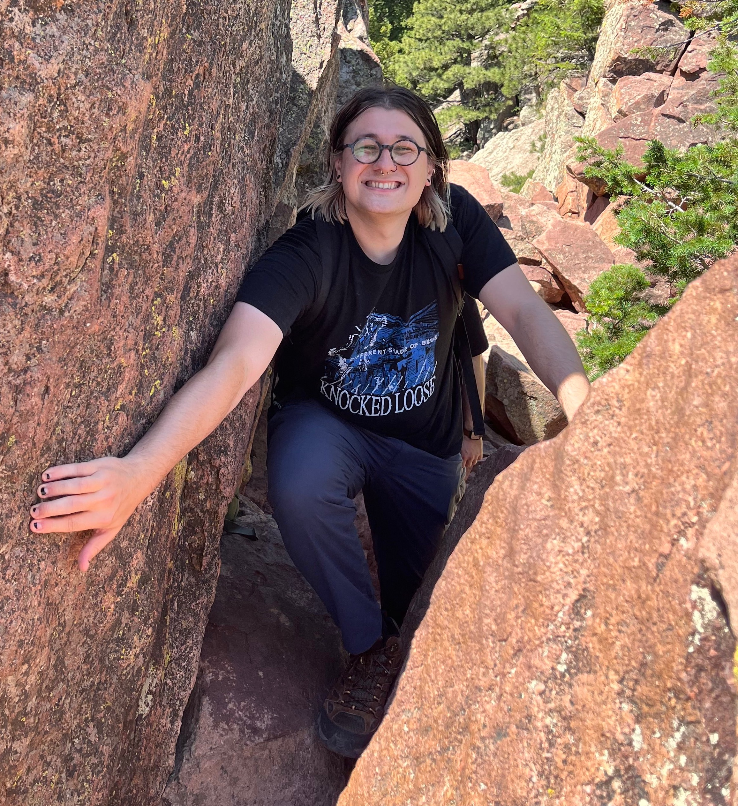

Sal Pace
3rd year physics PhD student at MIT
Advisor: Xiao-Gang Wen
Email: sdpace4 (at) gmail (dot) com
I'm a theoretical physicist interested in understanding non-perturbative aspects of many-body systems (i.e., field theories) using symmetry and topology, with applications to quantum matter, statistical mechanics, and mathematical physics. My primary interest at the moment is generalized symmetries, particularly:
(1) continuous non-invertible symmetries,
(2) applications to classifying quantum many-body phases and phase transitions,
(3) generalized symmetries arising from topologically protected defects (e.g., vortices, disclinations, hedgehogs) and their applications to quantum disordering.
I am also interested in topological phases of matter, emergent gravity, UV/IR mixing, applications of homological algebra to physics, and applying formal methods used in studying topological phases to quantum dynamics. In the past, I also worked on quantum spin liquids and dynamical systems.
You can find all of my papers on Google scholar, here.
You can see my CV, here.